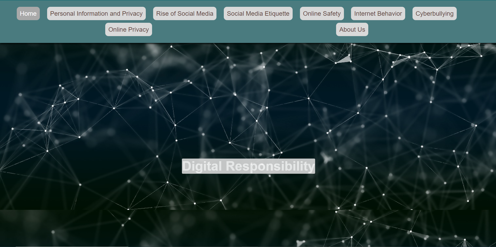

For this website, the whole class made it for our showcase. We were all put into teams that had a page in this website. Then we were given our own pages to make. Working with a team was very helpful but also hard to manage. Although, we had altercations about time management we ended up finishing our part of the website.
Visit the Digital Ethics Website